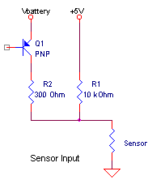
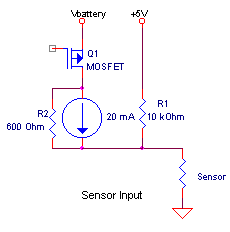
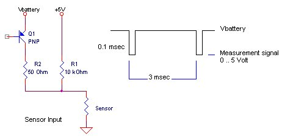
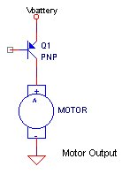
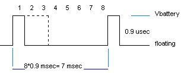
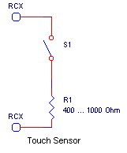

Robbert
Mattijs
Stef Mientki
januari 2001
| Lego-Knex
Robbert Mattijs |
Lego RCX-Electronics Inside
Stef Mientki januari 2001 |
|
|
|
|  
 |
If a touch sensor is selected, then Q1 is off.
If a light or rotation sensor is selected, then Q1 is switch according the figure below. This timing signal is synchronous for all 3 sensor inputs, although the real sampling can't be synchronous. Therefore a sensor must remain its value during the whole period of 0.1 msec. The sensed amplitude is determind by R1 and the sensor resistance which
divides the +5Volt power supply.
About the value of R1, everyone agrees, R1=10 kOhm.
Because I wasn't satisfied with some earlier measurements I did, I simulated a voltage source and a current source (see simulations below) and decided a non-ideal current source of 20 mA / 600 Ohm was the best match. In designing sensors, you will try to keep the power comsumption as low as possible. A resistor of 1 kOhm will draw about 7 mA, which should be more than enough for most sensors. |
|
|
Rload = the load
resistance
Vmeasured = the measured voltage Imeasure = Vmeasure / Rload Current Source is a simulation with a current source of 20 mA / 600 Ohm. Voltage Source is a simulation with a non-ideal voltage source of 8V / 300 Ohm. |
|
|
The measurements are not very accurate, due to bad measurement
equipment.
But it can be seen that the current source simulation fits the measuements better than the voltage source simulation. |
|
|
|
| 
 |
The motor is in principle driven with 1 transistor or FET.
To fully operate the motor in both directions ther will be of course 4 electronic switches. The timing is given below. You can measure this timing only by loading
the terminals with pure resistor (1 kOhm or so).
The speed of the motor is determined by the amount of time where Q1 is switched on, which varies from 1 to 8 times 0.9 msec. |
| RCX Touch Switch | |
|  | The touch switch has probably a very bad switch in it, depending on the pressure the resistance varies between more than 1 kOhm and 400 Ohm. |
| RCX Light Sensor | |
| from the pictures from Frank
Angeli
LM358D 10 uF about 6 transistors |
|
The RCX was powered by NiCd batteries, which were not fully loaded,
so the battery voltage was about 7 Volt.
RCXcc was used to directly control the RCX. Strange effect was that
the battery level indicated by RCXcc was 7643 mV, which is far too much.
Measurements were done with Gould scope en a separate voltmeter.